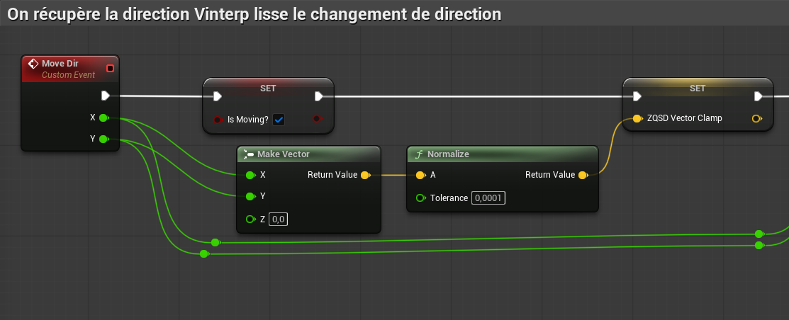
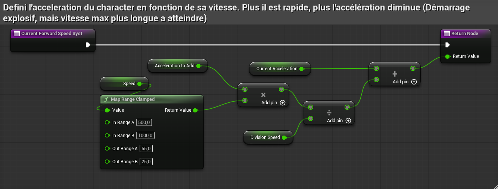
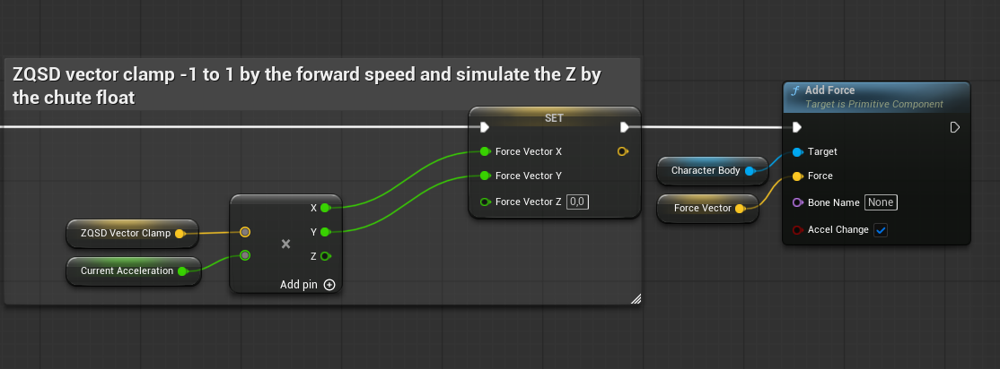
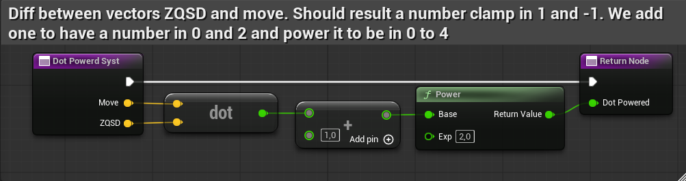
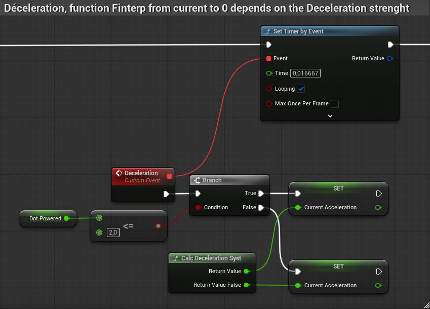

Concevoir un système de déplacement physique
Le déplacement est au cœur de Pouss'Plouf !. L'objectif était de créer une sensation de glisse sur la banquise, sans sacrifier la réactivité nécessaire aux affrontements.
J'ai développé le système de mouvement du personnage à partir de zéro, en utilisant les forces physiques d'Unreal Engine 5 plutôt qu'un déplacement direct.
Comment conserver une inertie perceptible tout en donnant au joueur un contrôle suffisant sur ses trajectoires ?
Construire un système combinant direction interpolée, accélération dynamique, application de forces et décélération personnalisée.
Du stick au vecteur de déplacement
Le système commence par récupérer les valeurs de déplacement issues des inputs du joueur. Ces valeurs permettent de construire un vecteur représentant la direction demandée.
La normalisation de ce vecteur permet d'obtenir une direction indépendante de son amplitude initiale. Elle évite notamment que les déplacements diagonaux produisent une force supérieure aux déplacements sur un seul axe.
La fonction Move Dir Syst utilise une interpolation VInterp To pour faire évoluer progressivement la direction actuelle vers celle demandée par le joueur.
Input Vector → Normalisation → Direction cible → VInterp To → Move Direction

L'interpolation permet d'ajuster la rapidité des changements de direction. Elle contribue à la sensation d'inertie recherchée pour les déplacements sur la glace.
Une accélération qui évolue avec la vitesse
Une accélération constante ne permettait pas d'obtenir le comportement recherché : un démarrage rapide, suivi d'une montée en vitesse plus progressive.
J'ai donc développé la fonction Current Forward Speed Syst, qui utilise la vitesse actuelle du personnage pour calculer l'évolution de son accélération.
Un nœud Map Range Clamped transforme une plage de vitesses comprise entre 500 et 1000 en une valeur variant de 55 à 25.
Cette valeur intervient ensuite dans le calcul de l'accélération ajoutée à l'accélération courante.
New Acceleration = Current Acceleration + (Acceleration To Add × MapRange(Speed)) / Division Speed

Cette approche permet d'obtenir un personnage réactif au démarrage, tout en réduisant progressivement l'accélération ajoutée lorsque sa vitesse augmente. Le joueur doit davantage anticiper ses trajectoires à haute vitesse.
Appliquer le déplacement au personnage
Une fois la direction et l'accélération calculées, le système construit le vecteur de force à appliquer au personnage.
Le vecteur ZQSD Vector Clamp est multiplié par Current Acceleration. Les composantes X et Y du résultat sont affectées à Force Vector, tandis que sa composante Z reste nulle dans cette partie du calcul.
Le vecteur obtenu est transmis au nœud Add Force sur le composant Character Body, avec Accel Change activé.
Ce paramètre permet d'appliquer une variation d'accélération indépendamment de la masse du corps physique.
Force XY = Input Direction × Current Acceleration Force Z = 0 Character Body → Add Force

L'utilisation de forces permet au déplacement de tenir compte de la dynamique physique du personnage. Elle fournit une base pour les glissades, les changements de trajectoire et les interactions entre joueurs.
Adapter le freinage aux changements de direction
Le personnage devait conserver de l'inertie sans devenir incontrôlable, notamment lorsque le joueur demande un déplacement opposé à la trajectoire actuelle.
J'ai développé un système utilisant le Dot Product pour comparer la direction du mouvement à celle demandée par le joueur.
Le résultat du produit scalaire est transformé par l'expression (Dot + 1)², produisant une valeur comprise entre 0 et 4 pour deux directions normalisées.
Cette valeur intervient dans le calcul du freinage personnalisé, qui est ensuite ajusté progressivement à l'aide de FInterp To.
Dot = -1 → (Dot + 1)² = 0 Dot = 0 → (Dot + 1)² = 1 Dot = 1 → (Dot + 1)² = 4
01 — Dot Powerd Syst
Cette fonction compare la direction actuelle du déplacement à celle demandée par le joueur à l'aide d'un Dot Product. Le résultat est ensuite transformé par la formule (Dot + 1)² pour obtenir un coefficient utilisé dans le calcul de la décélération.

02 — Calc Deceleration Syst
Cette fonction utilise les paramètres du mouvement et le coefficient directionnel pour adapter le freinage du personnage. La décélération est ajustée progressivement grâce à FInterp To afin d'éviter les variations trop brusques.

Une première approche modifiait dynamiquement le Linear Damping. Les retours des tests ont montré que le comportement était trop glissant.
Le Linear Damping a donc été fixé à une valeur constante, tandis que le système de décélération personnalisé a été conservé pour adapter le freinage aux intentions de déplacement.